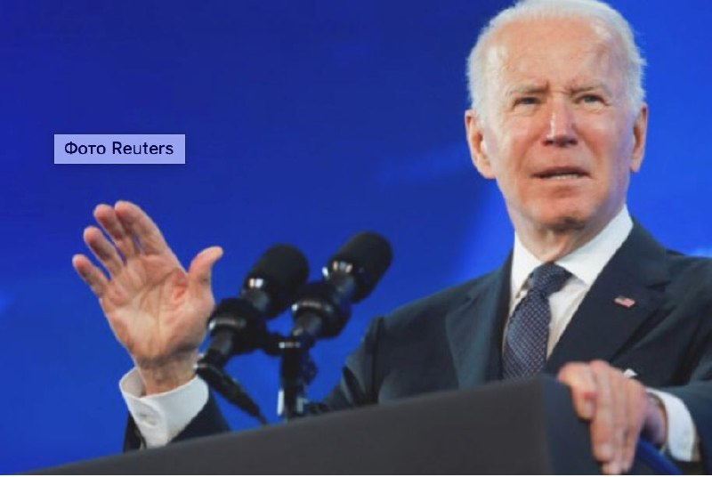
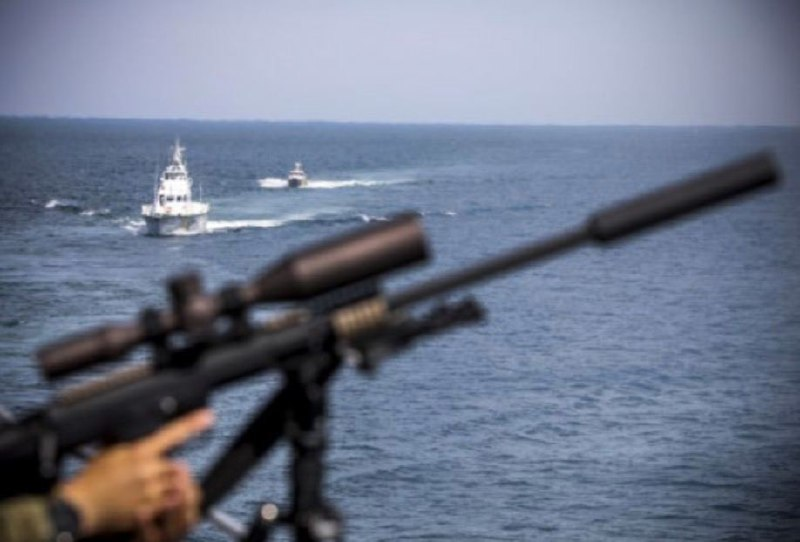
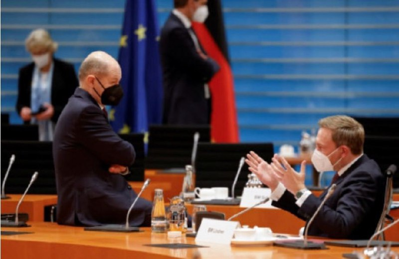
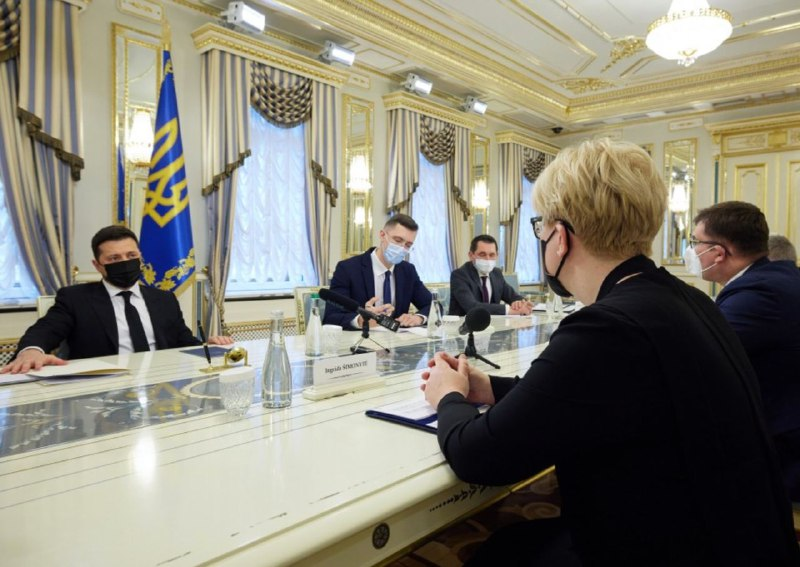
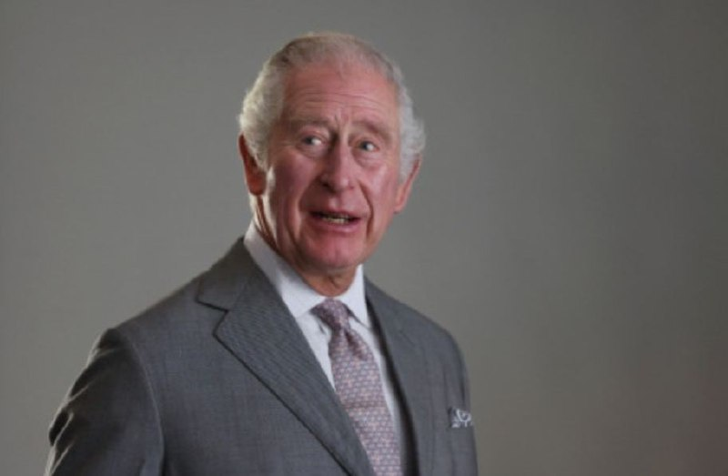

Байден закликав громадян США виїхати з України
Про це він сказав в інтерв'ю NBC News, передає Інтерфакс-Україна.
"Американські громадяни повинні виїхати зараз", - сказав Байден.
Він зазначив, що США в ситуації навколо України "мають справу не з терористичною організацією, а з однією з найбільших армій у світі".
"Це зовсім інша ситуація, і все може швидко перевернутися з ніг на голову", - сказав Байден.
Водночас він зазначив, що президент Росії Володимир Путін "насправді досить розумний, щоб не робити нічого такого, що могло б негативно позначитися на американських громадянах".
Водночас він зазначив, що президент Росії Володимир Путін "насправді досить розумний, щоб не робити нічого такого, що могло б негативно позначитися на американських громадянах".
Під приводом військових навчань РФ обмежує морський суверенітет України - США
Під приводом військових навчань Росія обмежує морський суверенітет України, свободу судноплавства у Чорному та Азовському морях та перешкоджає необхідним для економіки морським перевезенням.
Як повідомляє "Радіо Свобода", про це заявляє посольство США.
«Російська економічна війна проти України триває. Під приводом військових навчань Росія обмежує морський суверенітет України, обмежує свободу судноплавства в Чорному та Азовському морях та перешкоджає морським перевезенням, необхідним для економіки України», – йдеться у повідомленні посольства США у твітері.
Відповідна заява американських дипломатів з’явилася після того, як Росія оголосила закритими для судноплавства два райони Чорного моря та один в Азовському морі на період із 13 до 19 лютого для проведення військових навчань.
Міністр оборони України Олексій Резніков заявив, що світова спільнота мала б дати «сильну відповідь» Росії на її дії в Чорному й Азовському морях.
Міністр оборони України Олексій Резніков заявив, що світова спільнота мала б дати «сильну відповідь» Росії на її дії в Чорному й Азовському морях.
Нормандська зустріч у Берліні (Німеччина) на рівні політичних радників лідерів України, Росії, Німеччини та Франції триває вже сьому годину.
У зв'язку з цим брифінг українського парламентера Андрія Єрмака перенесли, повідомляє РБК-Україна з посиланням на Telegram Офісу президента. Повідомляється, що переговори тривають вже сьому годину.
"Очікується, що за результатами переговорів Андрій Єрмак проведе брифінг у приміщенні Посольства України в Німеччині. Орієнтовний час початку - 23:30 (за київським часом)", - йдеться в повідомленні.
Нагадаємо, спочатку планувалося, що Єрмак вийде на брифінг за підсумками зустрічі о 20:00.
Президент України провів зустріч з прем'єр-міністеркою Литви
Президент України Володимир Зеленський провів зустріч з прем'єр-міністеркою Литви Інгрідою Шимоніте.
Глава держави ознайомив співрозмовницю з актуальною безпековою ситуацією вздовж кордонів та на тимчасово окупованих територіях України, повідомили у пресслужбі.
Він також розповів про практичні кроки нашої держави, спрямовані на активізацію переговорного процесу в межах Нормандського формату та забезпечення його результативності.
«Дуже важливо, що ви приїхали підтримати Україну сьогодні, у час напруженої ситуації на кордонах нашої країни, на кордонах з Європою, на кордонах з Росією, на контактних лініях з тимчасово окупованими територіями нашої держави. Ми вважаємо наші стосунки з Литовською Республікою особливими як на рівні президентів, прем’єр-міністрів, держав, так і на рівні народів. Ми це відчуваємо не лише в період ескалації, а протягом усього часу», – зазначив Володимир Зеленський.
Принц Чарльз вдруге інфікувався коронавірусом
Старший син британської королеви Єлизавети II 73-річний принц Чарльз захворів на COVID-19.
Про це повідомила у твітері його пресслужба, пише "Радіо Свобода".
«Сьогодні вранці принц Уельський отримав позитивний тест на COVID-19 і нині перебуває на самоізоляції», – йдеться у повідомленні.
Наступник британського престолу вперше інфікувався коронавірусом у березні 2020 року. Тоді повідомлялося, що принц Чарльз почувався добре.